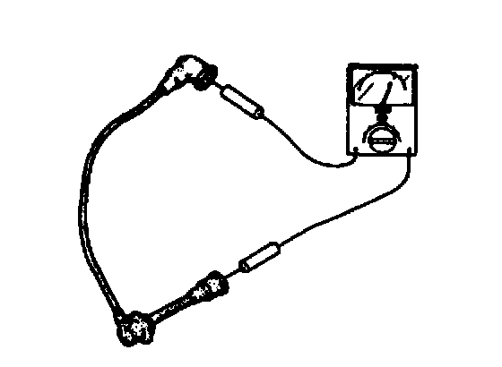

Ignition Cable: Testing and Inspection
1. Measure the resistance of high-tension lead by using an ohmmeter.Specification
No.1 lead: 4-11 Kohm
No.2 lead: 3-8 Kohm
No.3 lead: 2-6 Kohm
No.4 lead: 1-5 Kohm

2. If not as specified, replace the high-tension lead.